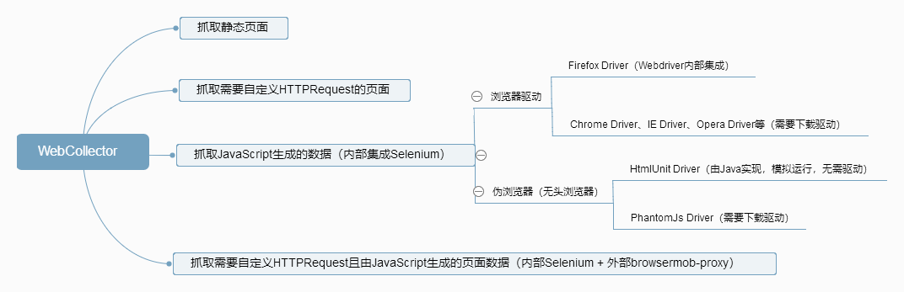
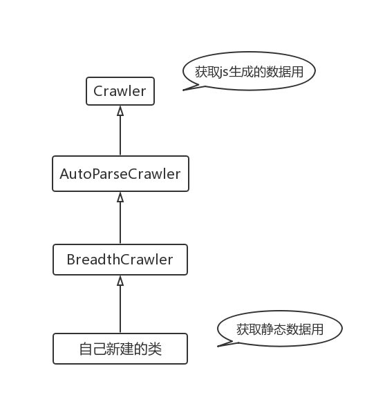

Long, Long Ago，网络上出现大量Python爬虫教程，各种培训班借势宣扬Python，近几年又将噱头转向人工智能。爬虫是一个可以简单也可以复杂的概念，就好比建造狗屋和建筑高楼大厦都是在搞工程。
由于工作的缘故，我需要使用WebCollector爬取一些网页上的数据。其实宏观上，爬虫无非就是访问页面文件，把需要的数据提取出来，然后把数据储存到数据库里。难点往往在于，一是目标网站的反爬策略，这是让人比较无奈的斗智斗勇的过程；二是目标网页数量大、类型多，如何制定有效的数据爬取和数据分析方案。
这是一张简略的概念图，受屏幕宽度限制，可能无法看清内容，请在新标签页打开图片，或者直接点击 这里。这张图片并不是完美的，甚至还包含不完全正确的实现方式，具体内容会在后面阐述。
我将目标网页分为4种类型：
为了便于测试，在本地使用Node.js启动一个简单的服务器，用于接收请求，并返回一个页面作为响应。server.js的内容如下：
var http = require('http')
var fs = require('fs')
var server = http.createServer((req,res) => {
// 返回页面内容
fs.readFile('./index.html', 'utf-8', (err,data) => {
res.end(data);
});
// 打印请求中的Cookie信息
console.log(req.headers.cookie)
})
server.listen(9000)
index.html的内容更加简单，只包含一个title和一个p标签：
<!DOCTYPE html>
<html>
<head>
<title>This is a title</title>
</head>
<body>
</body>
</html>
这是一个最简版的爬虫程序，在构造方法中调用父类的有参构造方法，同时添加url到待爬取队列中。visit是消费者，每一个url请求都会进入这个方法被处理。
public class StaticDocs extends BreadthCrawler {
public StaticDocs(String crawlPath, boolean autoParse) {
super(crawlPath, autoParse);
this.addSeed("http://127.0.0.1:9000/");
}
@Override
public void visit(Page page, CrawlDatums next) {
System.out.println(page.doc().title();
// This is a title
}
public static void main(String[] args) throws Exception {
StaticDocs crawler = new StaticDocs("crawl", true);
crawler.start(1);
}
}
需要在header中带cookie请求同样简单，在构造方法中添加相应配置就可以，node.js的命令行会打印出cookie的内容：
public CookieDocs(String crawlPath) {
super(crawlPath, true);
// 设置请求插件
setRequester(new OkHttpRequester() {
@Override
public Request.Builder createRequestBuilder(CrawlDatum crawlDatum) {
return super.createRequestBuilder(crawlDatum)
.header("Cookie", "name=smallyu");
}
});
this.addSeed("http://127.0.0.1:9000/");
}
// name=smallyu
测试js生成数据的情况需要做一点准备，修改index.html，在body标签中加入这样几行代码：
<div id="content">1</div>
<script>
document.getElementById('content').innerHTML = '2'
</script>
可以预见，请求中直接返回的div内容是1，然后js经由浏览器执行，改变div的内容为2。访问静态页面的爬虫程序只能进行到第1步，也就是直接获取请求返回的内容。修改StaticDocs.java的visit方法，打印出div的内容看一下，可以确信是1：
System.out.println(page.select("div").text());
// 1
这是一个官方提供的Demo，用于获取js生成的数据。WebCollector依赖于Selenium，使用HtmlUnitDriver运行js：
public class JsDocs {
public static void main(String[] args) throws Exception {
Executor executor = (CrawlDatum datum, CrawlDatums next) -> {
HtmlUnitDriver driver = new HtmlUnitDriver();
driver.setJavascriptEnabled(true);
driver.get(datum.url());
WebElement divEle = driver.findElement(By.id("content"));
System.out.println(divEle.getText());
// 2
};
//创建一个基于伯克利DB的DBManager
DBManager manager = new RocksDBManager("crawl");
//创建一个Crawler需要有DBManager和Executor
Crawler crawler = new Crawler(manager, executor);
crawler.addSeed("http://127.0.0.1:9000/");
crawler.start(1);
}
}
如果你看过WebCollector的主页，一定可以注意到这个Demo和其他Demo的明显不同。在不需要js生成的数据时，新建的类继承自BreadthCrawler，而BreadthCrawler继承自AutoParseCrawler，AutoParseCrawler又继承自Crawler。现在获取js数据的Demo，直接跳过BreadthCrawler和AutoParseCrawler，实例化了Crawler。
为什么要这样做呢？再次强调，这是官方提供的Demo。
根据官方提供的用例，显然是无法设置cookie的，因为Crawler类并没有提供自定义Header的方法。这个自定义Header的方法继承自AutoParseCrawler类。那么如何做到既可以添加Cookie又可以使用HtmlUnitDriver？
其实结果很简单，我在看过WebCollector的代码后发现AutoParseCrawler实现了Executor接口，并且在构造方法中将this赋值给了父类的executor。也就是说，AutoParseCrawler本身就是一个Executor。下面的代码用以表示它们的关系：
public class Crawler {
protected Executor executor;
public Crawler(DBManager dbManager, Executor executor) {
// ...
}
}
public class AutoParseCrawler extends Crawler implements Executor {
public AutoParseCrawler(boolean autoParse) {
// 这里的executor指向父类
this.executor = this;
}
}
new Crawler时传入一个executor，相当于直接new一个AutoParseCrawler。BreadthCrawler继承自AutoParseCrawler，所以BreadthCrawler本身也是个Executor。再看官方关于自定义Cookie的Demo，如何在其中使用HtmlUnitDriver呢？重写Executor的execute方法。
所以，在定义cookie后获取js生成的数据，使用继承BreadthCrawler的类，然后重写execute就可以。这是一个完整的Demo：
/**
* @author smallyu
* @date 2019.08.11 12:18
*/
public class JsWithCookieDocs extends BreadthCrawler {
public JsWithCookieDocs(String crawlPath) {
super(crawlPath, true);
// 设置请求插件
setRequester(new OkHttpRequester() {
@Override
public Request.Builder createRequestBuilder(CrawlDatum crawlDatum) {
return super.createRequestBuilder(crawlDatum)
.header("Cookie", "name=smallyu");
}
});
this.addSeed("http://127.0.0.1:9000/");
}
// 直接重写execute即可
@Override
public void execute(CrawlDatum datum, CrawlDatums next) throws Exception {
super.execute(datum, next);
HtmlUnitDriver driver = new HtmlUnitDriver();
driver.setJavascriptEnabled(true);
driver.get(datum.url());
WebElement divEle = driver.findElement(By.id("content"));
System.out.println(divEle.getText());
// 2
// 同时，node.js的命令行中打印出cookie内容
}
// 重写execute就不需要visit了
public void visit(Page page, CrawlDatums crawlDatums) {}
public static void main(String[] args) throws Exception {
JsWithCookieDocs crawler = new JsWithCookieDocs("crawl");
crawler.start(1);
}
}
也许还没有结束。在一开始概述的图片上，同时定义cookie以及获取js生成的数据，实现方式是内部Selenium + 外部browsermob-proxy。假设没有上述重写execute的方法（官方也确实没有提供类似的Demo），该如何实现想要的效果？一种实践是本地启动一个代理，给代理设置好cookie，然后让Selenium的WebDriver通过代理访问目标页面，就可以在带header的情况下拿到js生成的数据。这是在JsDocs.java的基础上，使用代理的完整实现：
public class JsWithProxyDocs {
public static void main(String[] args) throws Exception {
Executor executor = (CrawlDatum datum, CrawlDatums next) -> {
// 启动一个代理
BrowserMobProxy proxy = new BrowserMobProxyServer();
proxy.start(0);
// 添加header
proxy.addHeader("Cookie" , "name=smallyu");
// 实例化代理对象
Proxy seleniumProxy = ClientUtil.createSeleniumProxy(proxy);
// 由代理对象生成capabilities
DesiredCapabilities capabilities = new DesiredCapabilities();
capabilities.setCapability(CapabilityType.PROXY, seleniumProxy);
// 内置，必须设置
capabilities.setBrowserName("htmlunit");
// 使用capabilities实例化HtmlUnitDriver
HtmlUnitDriver driver = new HtmlUnitDriver(capabilities);
driver.setJavascriptEnabled(true);
driver.get(datum.url());
WebElement divEle = driver.findElement(By.id("content"));
System.out.println(divEle.getText()); // 2
};
//创建一个Crawler需要有DBManager和Executor
Crawler crawler = new Crawler(new RocksDBManager("crawl"), executor);
crawler.addSeed("http://127.0.0.1:9000/");
crawler.start(1);
}
}
对于WebCollector我已经没有兴趣了解更多，倒是在注意到框架的包名cn.edu.hfut后有种豁然开朗的感觉。凌乱的代码风格，随处可见不知所以的注释，毫无设计美感的代码架构，倒也符合国内不知名大学的开源软件水平，距离工业级的框架，可能还需要N个指数倍东的时间。至于使用过程中遇到depth含义不明、线程非法结束、next.add失效等问题，就这样吧，也在情理之中，整个框架都像是赶工的结果，或者说是学生们拿来练手的项目。我在WebCollector的Github上RP了关于重写execute的问题，从开发者回复的只言片语中，我怀疑开源者自己都没有把里面的东西搞清楚 :P
{kind=link}